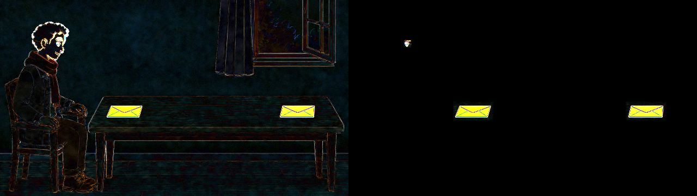

A 中模型已经做到的部分
红围巾、蓝灰外套、开窗与木桌都出现在画面里。单封信贴桌左滑，邮差最后有轻微反应，没有伸手接信。
具体的人物造型、近距离斜侧机位和深色房间，由模型自行生成。
打开 A 原片研究 003 单镜头生成实验
最值得保留的做法，是在付费生成视频前，检查并修正首尾帧的意外变化。
三条五秒原片让我们重新理解这套流程。短提示词已经拍出了动作链，加入首尾帧后画面更贴近分镜，七段式提示词仍有执行偏差。叠帧检查则确实找出并修正了四处输入图变化。

模型基线
A 只收到一条文字描述。窗帘约 0.4 秒明显掀起，信封约 0.75 秒开始微移、约 2.9 秒停稳，邮差约 3.3 秒轻微转向。先动什么、后动什么，在这条短提示词样本中已经可见。
红围巾、蓝灰外套、开窗与木桌都出现在画面里。单封信贴桌左滑，邮差最后有轻微反应，没有伸手接信。
具体的人物造型、近距离斜侧机位和深色房间，由模型自行生成。
打开 A 原片这是一轮单镜头模型试用，也形成了一项可以继续使用的输入图检查方法。增加输入后的画面变化值得记录，流程的稳定收益需要重复生成和整片制作来检验。
三组使用同一模型，各生成一条，未固定同一个随机种子。
对照设计
我们用 Codex 统筹、ImageGen 做图、FFmpeg 修整参考帧，再用 ChatArt 的 Seedance 2.0 Mini 生成三条。共同目标为五秒、横版和固定机位。A → B 添加首尾帧，B → C 同时扩写动作、空间与约束。各组一次生成，随机结果也可能影响差异。
一句镜头描述。观察模型怎样自行决定人物、构图和动作。
看短提示词 ↗保留 A 的文字，加上指定的起止画面。A → B 看首尾帧带来的变化。
看首尾帧 ↗沿用 B 的图片，写细动作时间和画面约束。B → C 看提示词带来的变化。
看七段式提示词 ↗提示词要求静音，实际交付的三条原片均含音轨。A、C 为 1280 × 720、约 5.09 秒，B 为 1344 × 768、约 5.18 秒。均为 24 fps，每条实耗 75 积分。提交前总预估 180 积分，实际 225 积分。A 从提交到出片等待超过一小时。
增加输入后的实际变化
左到右是 A、B、C。B 的构图与信封起止更贴近参考图，窗帘和信封却几乎同时起动。C 将两次起动拉开约半秒，但邮差提前追看，还出现额外斜光。A 的短提示词也实现了先帘后信。
| 检查项 | A · 纯文本 | B · 短提示词＋首尾帧 | C · 七段式＋同一对帧 |
|---|---|---|---|
| 画面 | 自行选择近距离斜侧景、深色房间和人物造型。 | 更接近预设人物、桌窗布局和信封起止位置。 | 延续 B 的构图，开头出现额外斜阳光。 |
| 动作先后 | 帘约 0.4 秒明显掀起，信封约 0.75 秒开始微移。 | 信封约 0.125 秒已有微移，帘和信封起步接近。 | 帘约 0.17 秒掀起，信封约 0.75 秒开始左滑。 |
| 停止与反应 | 约 2.9 秒停稳，邮差约 3.3 秒轻微转向右下。 | 约 3.75 秒停稳，邮差反应不明显。 | 约 3 秒停稳。邮差此前已追看，随后轻微前探。 |
付费前检查
本来只想移动信封、微调眼睛，生成图片时却同时改动了窗户、头发、手和桌面。叠帧与差分把这些变化找了出来，再只将眼睛和信封合回底图，四处固定区域的输入像素差均归零。
提交前先说清哪些区域应该变化、哪些应保持固定。叠看首尾帧，用差分查偏差，把需要变化的局部合成回同一底图。
本轮确实在付费视频生成前修正了四处输入问题。后续视频更稳、重试更少或积分更省，需要单独测量。

| 区域 | 修正前 | 修正后 |
|---|---|---|
| 窗户 | 3.698 | 0 |
| 头发 | 21.06 | 0 |
| 手 | 4.448 | 0 |
| 桌面中央 | 2.245 | 0 |
测量对象是静态输入图。归零来自固定区域复用同一底图像素。生成视频中的连续性与成功率仍需验收。
原文八步
Eian 的八步涵盖从故事到整片交付。本次由 Codex 统筹，只做了一个镜头、三组生成、并排剪辑和单镜复核。原文所述整片返工收益仍待验证。
把想法写成可拍的故事。让没参与创作的人复述，找出因果和动机是否读得懂。
本次完成单镜头故事逐镜确定景别、机位、画面方向、动作起止和转场，明确每个镜头交代什么。
本次完成单镜头分镜用样帧确定配色和画风，为人物、服装与固定道具建立参考图。
本次完成单角色设定把动作前后画出来，给物体留出移动空间。叠帧检查窗、桌面和人物等固定部分。
本次完成一对参考帧写清画风、镜头、构图配色、人物、分段动作、声音和约束。对照首尾帧查矛盾。
本次完成提交前复核让 Seedance 生成最难的一镜。看实际结果后再推进其他镜头，保留各次原片。
本次生成 A / B / C用 FFmpeg 和 Python 剪切、拼接、转场和调色。能靠后期处理的问题先在后期修。
本次仅做并排剪辑让独立审核者复述看懂的故事并标记问题，再由人确认播放节奏和声音。
本次仅做单镜头复核理解与边界
目前最值得保留的是提交前检查和局部合成，它在本轮确实找出并修正了输入图问题。三条原片记录了模型在不同输入下的表现，帮助下一次明确检查重点。
A 已能拍出主要动作链。B 加首尾帧后更接近指定画面。C 的分段描述把动作目标写得更具体，成片中仍有提前反应和额外光线。
每组一条且未固定相同随机种子，稳定性需要重复生成。B → C 扩写了多个方面，分段格式本身的影响也需要另测。
第 7、8 步本次只完成并排剪辑和单镜头复核。
研究引导图
图中保留模型基线、三组效果、四处差分、原文八步，以及本次执行范围和待验证价值。